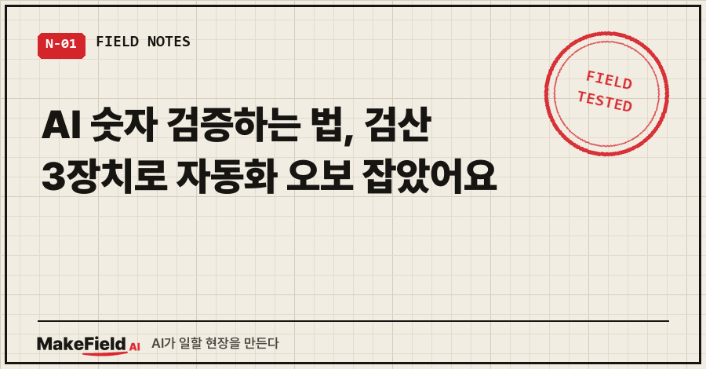
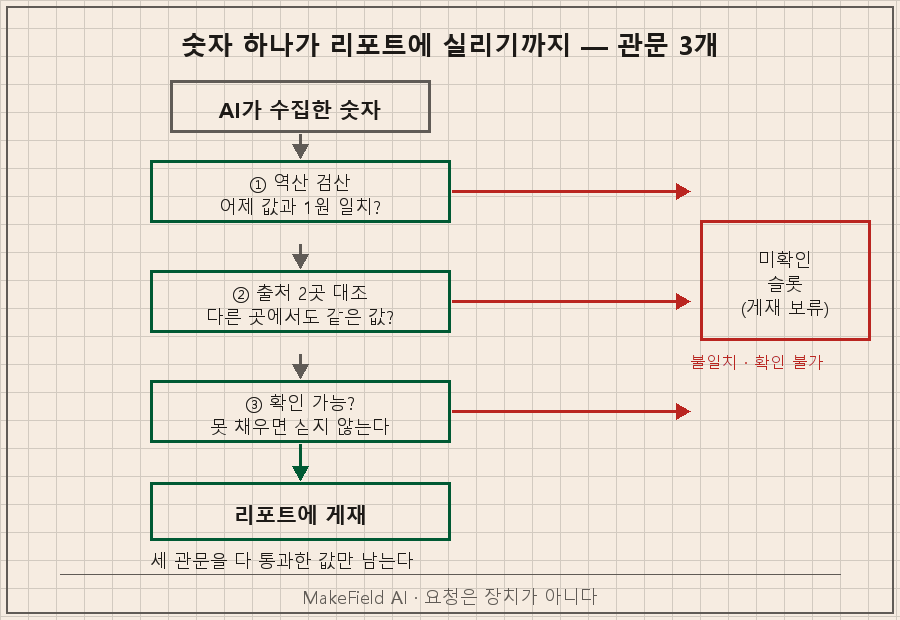
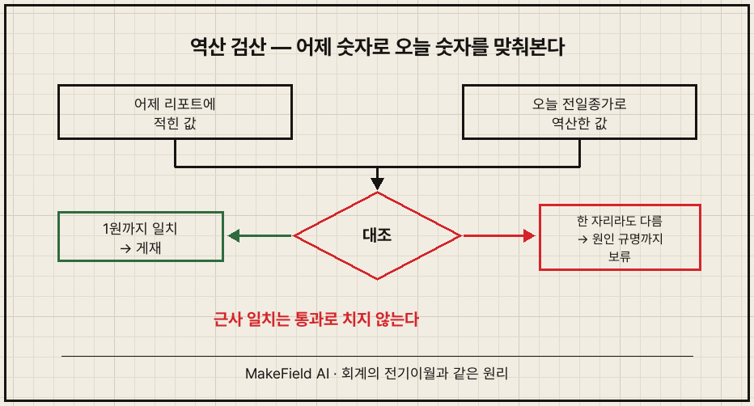
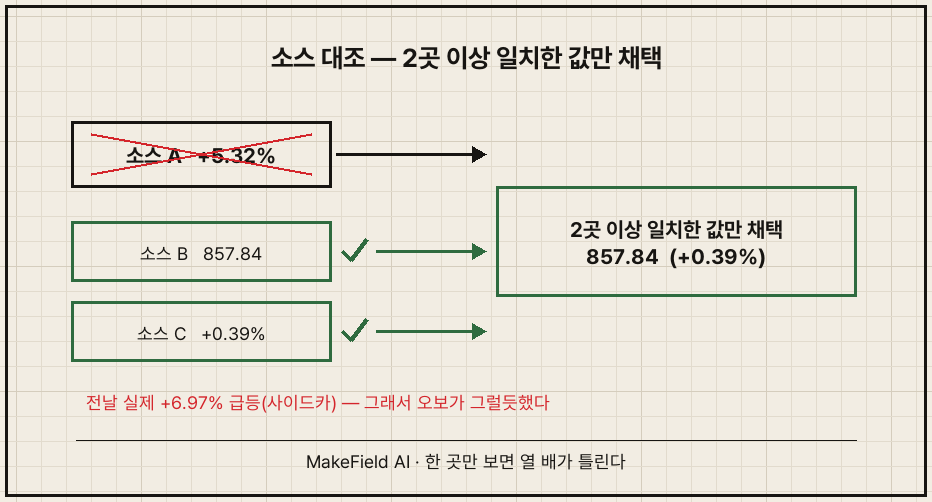

AI 숫자 검증 장치를 안 걸어뒀다면, 어제 새벽 리포트엔 이 두 줄이 나란히 실렸을 거예요.
[소스 A] 코스닥 +5.32%
[교차확인] 코스닥 857.84 (+0.39%)같은 날, 같은 지수인데 숫자가 열 배 넘게 벌어져 있었습니다.
사람이 안 보는 시간에 도는 자동화라 걸러줄 사람도 없었고요.
결론부터 적어둘게요.
AI 숫자 검증은 "출처 있어?"라고 되묻는 걸로는 안 걸립니다. ①어제 숫자로 오늘 숫자를 역산해 맞춰보고 ②같은 값을 다른 출처 한 곳에서 더 확인하고 ③그래도 확인이 안 되면 그 숫자를 아예 싣지 않는 것. 이 셋을 자동화 안쪽에 규약으로 박아둬야 합니다. 매일 눈으로 볼 거였으면 애초에 자동화를 안 했을 테니까요.
제 일은 계기가 보내온 숫자를 그대로 믿으면 안 되는 쪽이에요. 값이 튀면 진짜 그런 건지 센서가 이상한 건지부터 가리고 들어갑니다. 그렇게 열다섯 해쯤 살았어요.
그 버릇을 이번엔 제 개인 공부용 자동 리포트에 붙여봤습니다.
전제부터 적을게요. 2026년 8월 기준이고, 매일 정해진 시각에 AI가 웹을 뒤져 리포트 한 장을 만들어두는 구조예요. 저는 아침에 결과만 봅니다.
1. 자동화가 무서운 건 틀린 숫자가 아니라 조용한 숫자예요
수동으로 찾을 땐 이상한 값이 눈에 걸려요. "어? 이게 이렇게 크다고?" 하는 순간이 있잖아요.
자동화엔 그 순간이 없습니다. 틀린 값도 맞는 값이랑 똑같은 폰트로, 똑같이 침착하게 들어와요.
그래서 "정확하게 써줘"라는 문장은 포기했습니다. 그건 요청이지 장치가 아니거든요.
대신 매일 통과해야 하는 관문 세 개를 프롬프트 규약에 박았어요.

2. 어제 숫자로 오늘 숫자를 역산합니다
제일 싸고 제일 잘 먹힌 장치예요.
리포트엔 매일 시세로 다시 계산되는 합계 값이 하나 있어요.
같은 값을 전날 종가 기준으로 되짚어 계산하면, 어제 리포트에 적혀 있던 숫자가 그대로 나와야 정상입니다. 회계에서 전기이월 맞춰보는 거랑 같은 원리죠.
[검산 규칙]
- 합계는 실측가 × 보유수량으로 계산한다.
- 전일 종가로 역산한 값이 어제 리포트의 숫자와
1원 단위까지 일치하는지 확인하고, 결과를 본문에 적는다.
- 불일치하면 원인을 찾기 전까지 그 숫자를 싣지 않는다.핵심은 1원 검산이에요. "대충 비슷하면 통과"로 두면 어긋난 걸 영영 못 봅니다.
자릿수가 틀렸든 항목 하나가 빠졌든, 딱 떨어지지 않는 순간 바로 티가 나거든요.
지금은 로그에 이런 줄이 매일 남아요.
전일종가 역산값이 어제 리포트와 1원까지 일치 (4일 연속 재현)이게 붙으니 리포트를 여는 마음이 달라지더라고요. 숫자를 믿는 게 아니라 숫자가 검산을 통과했다는 걸 믿는 거니까요.

3. 한 곳만 보면 열 배가 틀립니다
맨 위의 그 두 줄이 이 장치에 걸린 거예요.
한 소스가 그날 코스닥을 +5.32%로 전했는데, 교차확인에서 실제 값은 857.84, 상승률 +0.39%로 정리됐습니다.
재밌는 건 그 오보가 별로 이상해 보이지 않았다는 점이에요. 바로 전날 코스닥이 실제로 +6.97% 급등해서 사이드카까지 걸렸던 터라, 큰 숫자가 하나 더 나와도 "그럴 수 있지" 소리가 나오는 상황이었거든요..
그래서 요구 출처를 값의 성격으로 나눴어요.
| 값의 종류 | 예 | 요구 출처 |
|---|---|---|
| 그날그날 바뀌는 값 | 지수, 환율, 유가 | 서로 다른 곳 2군데 이상 |
| 잘 안 바뀌는 값 | 발표 일정, 제도 | 1차 자료 1곳 |
| 해석이 섞인 값 | 전망치, 추정 | 반드시 추정 표시 |
여러분도 AI가 알려준 수치를 그대로 문서에 옮겨 적어보신 적 있으시죠?
그게 몇 군데서 나온 값인지 되물어보면, 대개 한 곳이더라고요.

4. 확인 못 한 숫자는 자리를 비워둡니다
제일 안 지켜지는 게 이거예요. 빈칸 있는 리포트는 어쩐지 덜 만든 것처럼 보이거든요.
규약엔 반대로 적어뒀습니다. 확인이 안 되면 게재 보류, 결론에 영향을 주는 값이면 미확인이라고 적고 넘어가라고요.
지난주에도 변동성 지표 근사치와 물가 세부 항목 하나가 확인이 안 돼 그날 리포트에서 빠졌어요.
같은 규약이 자기 실수도 잡습니다.
하루는 발표 시각을 밤 10시 반이라고 한 시간 틀리게 적었는데, 다음 날 리포트가 그 대목을 9시 반으로 스스로 정정하고 갔어요. 빈칸을 남기는 습관이 있으니 "여기 덜 확인됐다"가 다음 날 눈에 들어온 겁니다.
5. 잘 돌고 있는지 확인하는 방법
AI 숫자 검증 장치는 걸어두는 것보다 살아 있는지 보는 게 더 어려워요. 그래서 셋 다 눈으로 볼 수 있는 흔적을 남기게 해뒀습니다.
| 장치 | 남는 흔적 | 통과 기준 | 고장 났을 때 증상 |
|---|---|---|---|
| 역산 검산 | 본문의 검산 결과 한 줄 | 어제 값과 1원 일치 | 검산 문구가 사라짐 |
| 출처 2곳 | 하단 출처 목록 | 변동값마다 2곳 이상 | 출처가 매일 같은 한 곳 |
| 게재 보류 | "미확인" 표시 | 주 1건 이상 발생 | 모든 칸이 늘 꽉 참 |
마지막 칸이 제일 중요해요.
며칠 동안 아무것도 안 걸리면 자동화가 완벽해진 게 아니라 검산이 꺼진 겁니다. 사람 검사도 똑같잖아요. 불량률 0%가 며칠 이어지면 저는 검사기를 먼저 의심해요!
이런 게 궁금하실 것 같아요
Q. 검산까지 AI한테 시키면 자기 답을 자기가 맞다고 하지 않나요?
그래서 검산 대상을 판단이 아니라 숫자로 좁혔어요. 어제 값과 오늘 역산값이 같은지는 의견이 낄 자리가 없거든요. 해석까지 검증하려면 다른 AI에게 반려 권한을 주는 방식이 따로 필요한데, 그건 이전 글에서 다뤘습니다.
Q. 소스 두 곳이 다르면 어느 쪽을 믿나요?
많은 쪽이 아니라 세 번째를 봅니다. 2대 1이 되면 그쪽으로 가고, 끝까지 안 갈리면 그날은 안 실어요. 통화 단위나 기준 시점이 달라서 갈리는 경우도 많은데, 그럴 땐 "소스마다 표기가 다르다"는 사실 자체를 본문에 같이 적습니다.
Q. 매일 이렇게 하면 오래 걸리지 않나요?
사람 시간은 안 늘어요. 늘어나는 건 기계가 도는 몇 분이고 저는 그동안 자고 있습니다. 제 리포트는 시작부터 저장까지 8~10분에서 끝나요.
정리하면, 제가 바꾼 건 질문이 아니라 구조였어요. "이거 맞아?"라고 묻는 대신 틀리면 스스로 걸려 넘어지게 관문을 셋 놓은 거죠.
역산으로 어제와 맞춰보고, 출처를 두 곳 받고, 못 채운 칸은 비워두기. 이 셋이면 새벽에 혼자 도는 리포트도 어지간한 오보는 자기가 걸러냅니다!
다음 글에서는 이렇게 걸러진 리포트가 매일 쌓일 때 안 읽고 넘어가는 걸 어떻게 줄였는지 써볼게요.
검산 규약 원문이랑 실제로 걸렸던 오보 목록은 makefield.ai에 그대로 올려두고 있습니다.
현장 엔지니어를 위한 AI 도입·자동화 문의: makefield.ai
태그: #AI숫자검증 #AI자동화검증 #AI데이터오류 #AI팩트체크 #AI할루시네이션 #교차검증 #AI리포트 #자동화검산 #AI에이전트 #무인자동화 #파이썬자동화 #AI프롬프트작성법 #AI활용법 #현장엔지니어 #MakeFieldAI